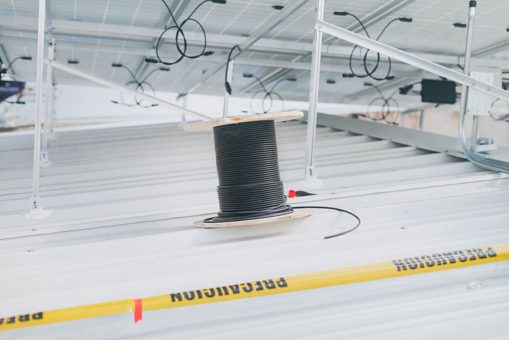

"What size cable do I need?" comes up on almost every solar project, whether it's the wiring between panels, the run from the array to the inverter, or the connection to a battery bank. The honest answer is that there's no single correct gauge — it depends on your system. But the logic behind the choice is simple once you see the three factors that drive it.
The three things that decide cable size
Every cable-sizing decision comes down to a balance of three factors:
- Current (amps). The more current a cable carries, the thicker it needs to be to carry it safely without overheating. This sets the absolute minimum size.
- Distance (length of run). The longer the cable, the more voltage it loses along the way. Long runs often need a thicker cable than the current alone would suggest.
- Acceptable voltage drop. The industry rule of thumb is to keep voltage drop at or below 3% for main runs. This is the target the cable size has to satisfy.
The cable you choose is the smallest standard size that carries the current safely and keeps voltage drop under your target over the full length of the run. Our cable size calculator does exactly this — you enter the current, voltage, distance, and target drop, and it returns the correct size.
From the field
On one of my projects we'd chosen 4 mm² for the DC cables, but the distance the cable had to travel to reach the inverter was long — and we ended up with a voltage drop. The fix was to increase the cross-section to 6 mm² to keep the full voltage. So the lesson is simple: as the distance a cable has to cover in any system increases, you need to increase the cable's cross-section to preserve the voltage that pushes the current.
Cable between solar panels and the inverter
The run from the array to the inverter is usually the longest DC run in the system, which makes it the one most likely to need upsizing. Panels might be on a far roof or across a yard from where the inverter is mounted, and every extra meter adds voltage drop. This is exactly the situation in the field note above: the current was fine for 4 mm², but the distance pushed the drop over the limit, so the cable had to go up to 6 mm². When in doubt on a long panel-to-inverter run, size for the distance, not just the current.
Cable between panels (string wiring)
The wiring between panels in a string carries the string current, which for most modern panels is around 8–11 A. Standard solar cable of 4 mm² (roughly 11 AWG) handles this comfortably over typical distances. The main thing to watch is the total string length once you add up all the panel-to-panel jumps plus the run back to the combiner or inverter. If you're wiring panels in series, our string sizing calculator helps you set the number of panels per string safely.
Cable to the battery bank
Battery cables are a different story: they can carry very high current at low voltage, especially on 12 V and 24 V systems. Because the current is high and the voltage is low, even a short battery cable can suffer significant voltage drop if it's undersized, so battery runs are often much thicker than panel cables. Keep these runs as short as possible and size generously.
A worked example
Say you have a string carrying 10 A on a 48 V system, and the run to the inverter is 15 m one way. Using 4 mm² copper, the voltage drop works out to about 2 × 15 × 10 × 0.0175 ÷ 4 = 1.31 V, or roughly 2.7% of 48 V — just under the 3% limit, so 4 mm² would pass here. But stretch that run to 20 m and the drop climbs to about 3.6%, over the limit — now you'd move up to 6 mm². Same panels, same current; the distance alone changed the answer. You can check any cable this way with the voltage drop calculator.
What if the cable is too thin?
An undersized cable causes three problems: it wastes energy as heat, it reduces the voltage reaching your inverter or batteries, and in bad cases it overheats — shortening the cable's life and creating a fire risk. There's no upside to going too thin. The only cost of going a size up is a little more money and slightly stiffer cable, which is almost always worth it on a long run.
The quick way to get your answer
Rather than working the formula by hand, use the tools built for it. The cable size calculator tells you the correct size for your current, distance, and target drop, and the voltage drop calculator checks whether a cable you already have stays within safe limits. Together they answer "what size cable do I need?" in seconds. For the bigger picture of wiring a whole system, see our solar system sizing guide.
Frequently asked questions
What size cable do I need for my solar panels?
It depends on the current, the length of the run, and your target voltage drop. Many residential strings use 4 mm² (about 11 AWG), but long runs often need 6 mm² or more to keep drop under 3%. Size for your specific current and distance rather than a default.
What size cable do I need between my panels and inverter?
This is often the longest DC run, so it's the most likely to need upsizing. Calculate the string current, measure the one-way distance, and size so voltage drop stays at or below 3% — frequently one size up from what current alone suggests.
Does cable length affect the size I need?
Yes. Voltage drop is directly proportional to length, so doubling the distance roughly doubles the drop. Two systems with identical panels can need different cable sizes if their runs to the inverter differ.
What happens if my solar cable is too thin?
It causes excessive voltage drop, wastes energy as heat, reduces delivered power, and in severe cases overheats — a fire risk. The correct size protects both performance and safety.